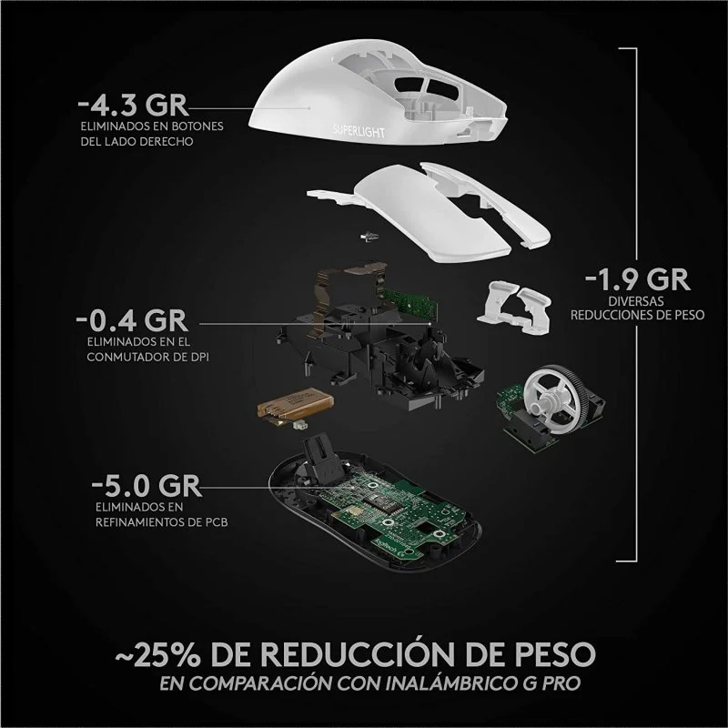
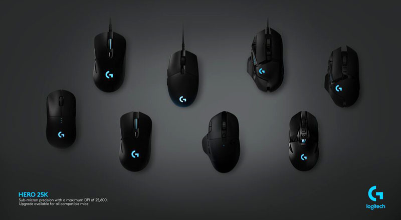
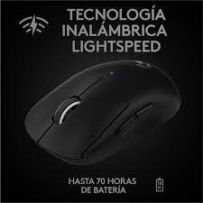

Logitech PRO X SUPERLIGHT
Logitech PRO X SUPERLIGHT es nuestro mouse PRO más rápido y ligero hasta la fecha. Meticulosamente rediseñado y diseñado para reducir el peso y mejorar el rendimiento, el PRO X SUPERLIGHT es la nueva raton elegida por los mejores atletas de deportes electrónicos del mundo.
SUPERLIGHT
Es el actual raton mas liegero, esto hace que a la hora de jugar de mas agilidad.
PATROCINADORES
Este raton es usado por los mejores jugadores de esports del mundo y es el mas recomendado.
Usa el sensor optiko 25 K
WIRELEESS
Logitech PRO X SUPERLIGHT es un aton inalambrico que va por carga no a pilas viene en su caja su cargador, tiene aproximadamente 70 horas de autonomia 20 horas superior a su versinon no superlight ya que el superlight no tiene luces.
Este Raton tiene un precio estimado de 100 - 140 euros el precio varia segun ls ofertas